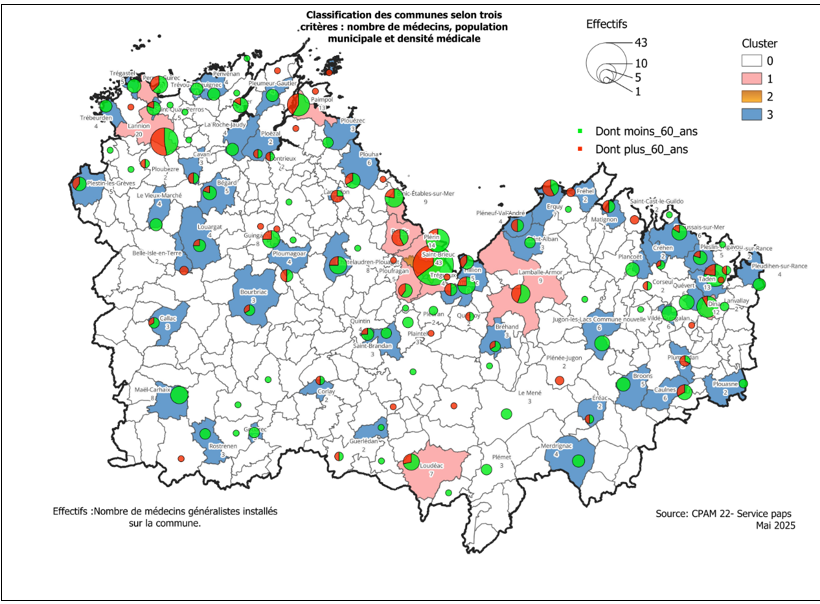

Rocher GOUETH MANIANGA
Étudiant en fin d’études en BUT Sciences des Données
Étudiant motivé, je maîtrise les outils statistiques et informatiques appliqués à la décision.
- Ville d'Etude: Vannes, France
- Ville: Rennes, France
- Age: 24
- Masculin: Masculin
Compétences
Data & Business Intelligence
- Python
- SQL
- Power BI
- DAX
- Power Query
- Excel avancé
- Reporting décisionnel
- Data Visualisation
- KPI & tableaux de bord
Data Engineering & Big Data
- Apache Spark
- Databricks
- Talend
- ETL / Pipeline de données
- Traitement de données massives
- Automatisation de traitements
- Manipulation de données CSV / Excel / API
Bases de données
- PostgreSQL
- MySQL
- Oracle SQL Developer
- Access
- MongoDB
- DuckDB
- Modélisation relationnelle
- Requêtes SQL avancées
Cloud & Technologies
- AWS Cloud
- Git / GitHub
- Jupyter Notebook
- APIs REST
SIG & Analyse spatiale
- QGIS
- Cartographie thématique
- Analyse spatiale descriptive
- GeoClimate
- OpenStreetMap (OSM)
- Géotraitements
- Analyse territoriale
Développement & Analyse
- Streamlit
- Dash
- Développement d’outils décisionnels
- Conception d’applications data interactives
Formation
-
2025 - 2026
BUT Sciences des Données
IUT de VannesParcours visualisation et conception d’outils décisionnels, système d’Information Géographique (SIG) et IA.
-
2023 - 2025
DUT Sciences des Données
IUT de VannesParcours visualisation et conception d’outils décisionnels, système d’Information Géographique (SIG) et IA.
-
2021 - 2022
Licence Mathématique
Faculté des sciences et techniques UPJV, AmiensMention Mathématique-Informatique
-
2020 - 2021
Formation en Développement Web
WebTinix, Congo -
2017 - 2020
Baccalauréat Général Scientifique
Lycée de la réconciliation à Brazzaville (Congo)Avec mention assez bien
Expérience
-
Sept 2026 - En cours
Alternance CPAM 22 | Data analyst & Chargé d’étude Stat
22000 Saint-Brieuc- Réalisation d’études statistiques (SQL Base de donnée SIAMRAS & SQLPlus) et ETL (Python)
- Lancement des scripts de requête sur SIAMRAS et mise en forme des données
- Création et diffusion de tableaux de bord interactifs (Power BI & Excel & Dash)
- Analyse du maillage territorial des Professionnels de Santé (QGIS & GeoPandas)
- Utilisation des outils internes de la CPAM (Suite_PS & FNPS & Medialog+ & Image & RPPS)
-
Mars - Juin 2025
Stage CPAM 22 | Data analyst
22000 Saint-Brieuc- Réalisation d’études statistiques (SQL)
- Création et diffusion de tableaux de bord interactifs (Power BI & Excel)
- Rédaction de notes de synthèse décisionnelle (Word & Power Point)
- Analyse du maillage territorial des Professionnels de Santé (QGIS & GeoPandas)
- Utilisation des outils internes de la CPAM (Suite_PS & FNPS)
-
Janvier 2026
Groupe mat! | Orange business (Datathon)
IUT Vannes, 56000 VannesOptimisation du bénéfice liée à la vente de vin
- Problématique
- Analyse statistique et segmentation (K-means)
Ce que je peux apporter au sein de votre entreprise
Que puis-je faire ?
Analyse des Données
Extraction et interprétation de données pour produire des informations utiles à la décision.
Traitement des Données
Nettoyage, transformation et structuration de données issues de différentes sources.
Cartographie
Visualisation et analyse de données géographiques pour mettre en évidence des dynamiques territoriales.
Conception d'outils Décisionnels
Développement de tableaux de bord et d’outils data pour piloter la performance et aider à la décision.
Réalisation
Voir mon Travail

Analyse Territoriale (CPAM)
QGIS, Analyse spatiale

Outil de pre-traitement
Vba, Power bi

Tableau de bord : Service vélo Marseille et Nantes
Power bi

Extrait du fichier
Excel

Table bord: analyse de l'impact des promotions
Power bi

Tableau de bord
Power bi

HeatMap
Vba,Excel

Notebook
R
Contact